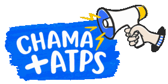

Segundo turno · 25 de outubro

Direitos precisam de um Estado que os faça valer.
Apoiamos Lula para fortalecer as políticas sociais, proteger direitos e preservar a democracia.
É sobre a vida que acontece fora da urna
SUS, creche, assistência e proteção.
É isso que está em jogo.
Políticas sociais precisam de orçamento, equipes e continuidade. A escolha de quem governa e de quem decide as leis afeta essa rede — e a vida de quem depende dela.
E onde entram os ATPS?
Tem gente aprovada.
Tem trabalho a fazer.
Os Analistas Técnicos de Políticas Sociais ajudam a planejar, acompanhar e avaliar as políticas que formam essa rede. É capacidade técnica para transformar recursos e decisões em melhores serviços.
Defendemos mais profissionais para esse trabalho. Nossa pauta é o terceiro curso de formação com 500 vagas: CF3/500.
Entenda a pauta e os cenários de chamamentoNossa cobrança continua depois da eleição. CF3/500 é uma reivindicação do movimento, sem promessa documentada de convocação por qualquer candidatura.
Depois do primeiro turno
Quem se elegeu. Quem vamos acompanhar.
Consulte os parlamentares eleitos do nosso levantamento e sua atuação em políticas sociais, serviço público e ATPS.
Consulte os eleitos por estadoPosicionamento da Comissão do Cadastro Reserva de ATPS do CPNU 1 · #ChamaMaisATPS. Sobre o posicionamento. Conteúdo com apoio de IA e revisão humana.